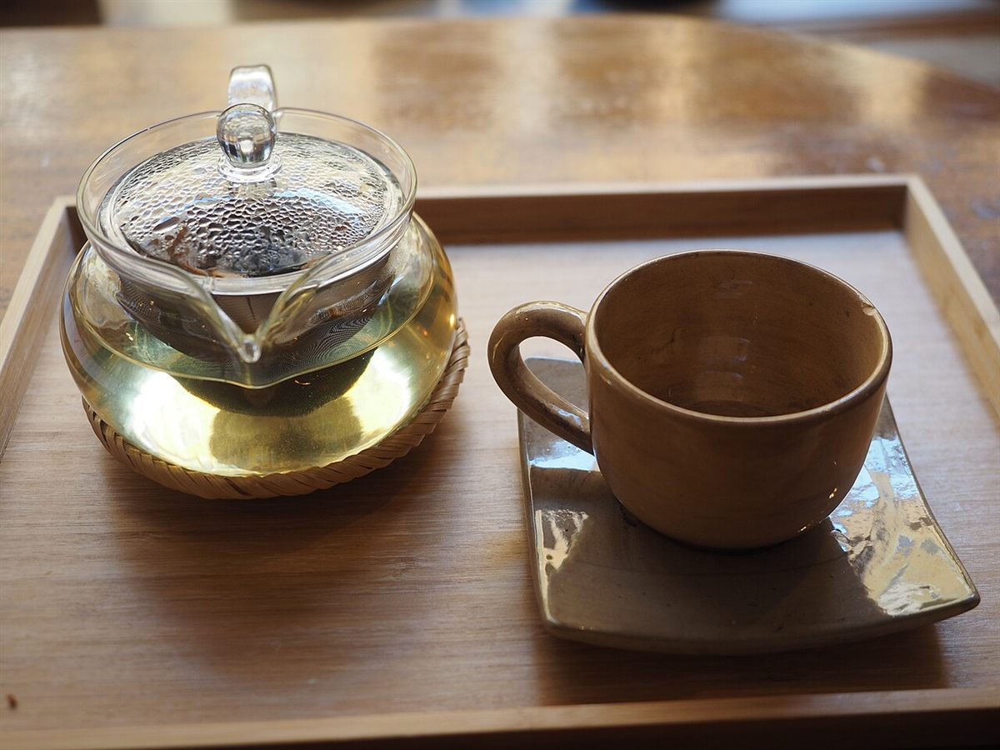
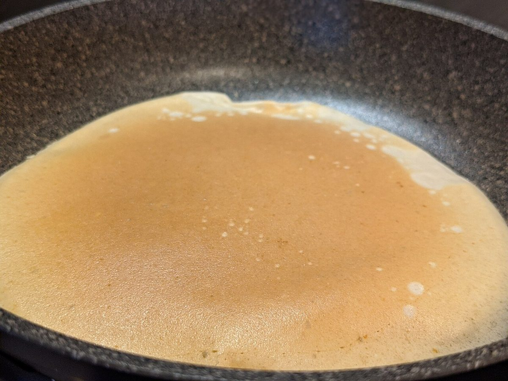
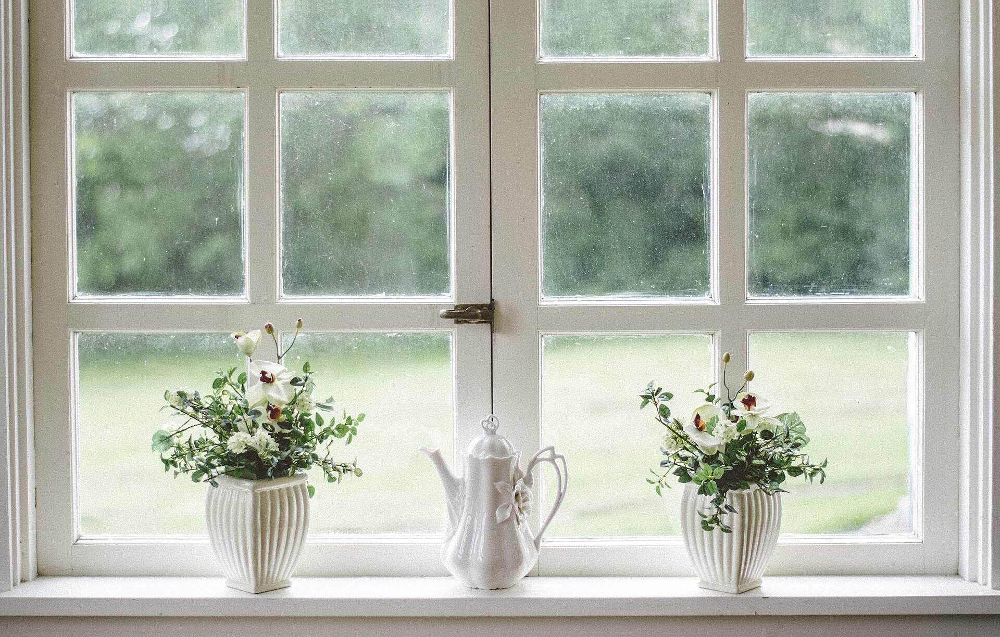
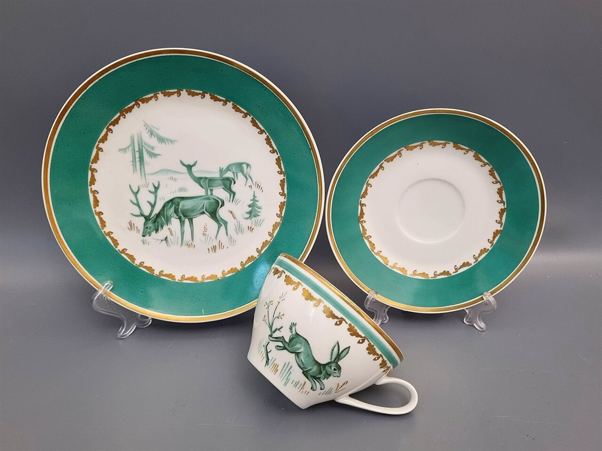
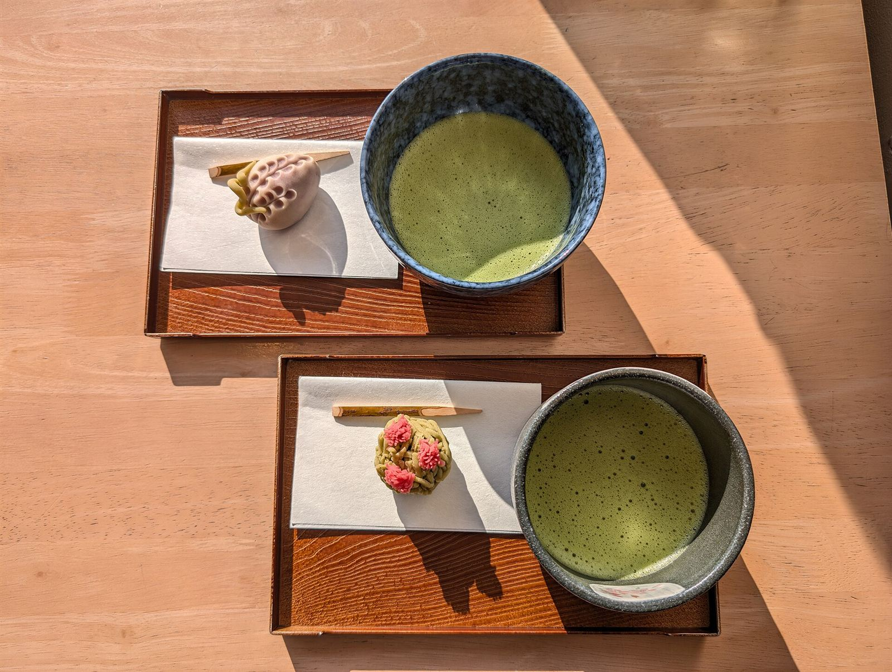
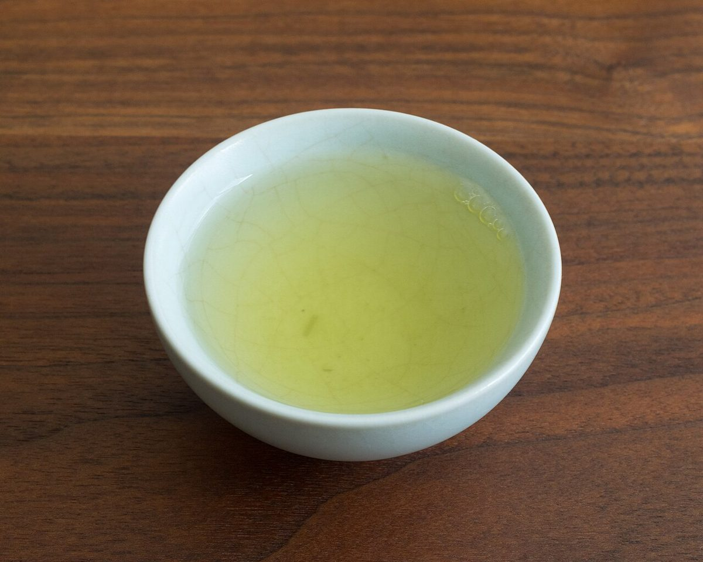

TEA & SWEETS
お茶とお菓子
紅茶は、スリランカの紅茶ブランド「ムレスナティー」を中心に、100種類以上のフレーバーをそろえていると紹介されています(2022年の開店報道)。銅板で焼くホットケーキや、スコーン、紅茶の飲み比べも案内されています。メニューの内容・価格・提供時間は変わることがあるため、ここでは「準備中」とし、最新情報はInstagramをご覧ください。

紅茶
フレーバーティーなど。内容は 準備中

ホットケーキ
銅板で焼く厚焼き。詳細は 準備中

スコーン
紅茶のお供に。詳細は 準備中



| 営業時間 | 準備中 |
|---|---|
| 定休日 | 準備中 |
| 価格 | 準備中 |
| 電話 | 準備中 |
ABOUT
お店のこと
Mellow tea house は、2022年6月に敦賀で開店した紅茶専門店です。店主の三谷成人さん・英美さんご夫妻は、2006年に敦賀へ移住されたと報じられています。
2024年の北陸新幹線・敦賀開業に合わせて、1920年代にポーランドの孤児たちへ敦賀の人々が贈ったリンゴの逸話にちなんだ、リンゴの香りの紅茶を開発。「敦賀に来て良かったと思ってもらえるように提供していきたい」と店主は語っています。英美さんは「大切な人のために紅茶を入れてほしい」という思いも話されています(中日新聞の報道による)。
このページの文章も「大切な人のために淹れる一杯」を軸にしています。
※「Mellow」はもともと「まろやか・円熟した」という意味の英語です。店名の由来が語られた資料は確認できていないため、これは制作側のイメージです。







VOICE
口コミ(イメージ例)
以下は制作側が作成したイメージ例で、実在のお客様の声ではありません。
ポットで届く紅茶を、のんびり飲み比べました。香りの違いを楽しむ時間が、いい休憩になりました。
— 来店のお客様(想像)焼きたてのホットケーキと紅茶の組み合わせが、やさしい味でほっとします。
— 来店のお客様(想像)大切な人へのお茶の贈り物を選びに寄りました。香りの説明が丁寧で、選ぶのも楽しかったです。
— 来店のお客様(想像)